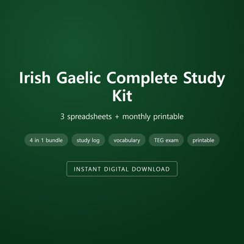
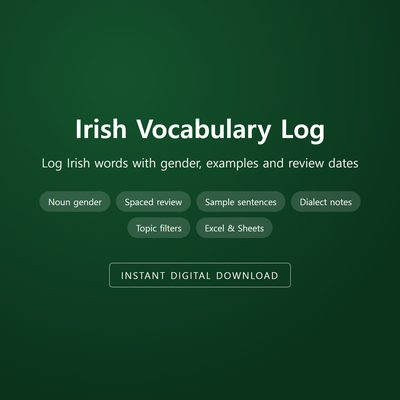
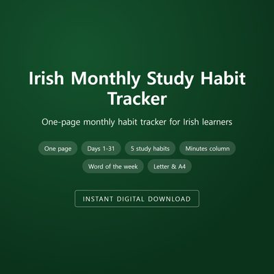
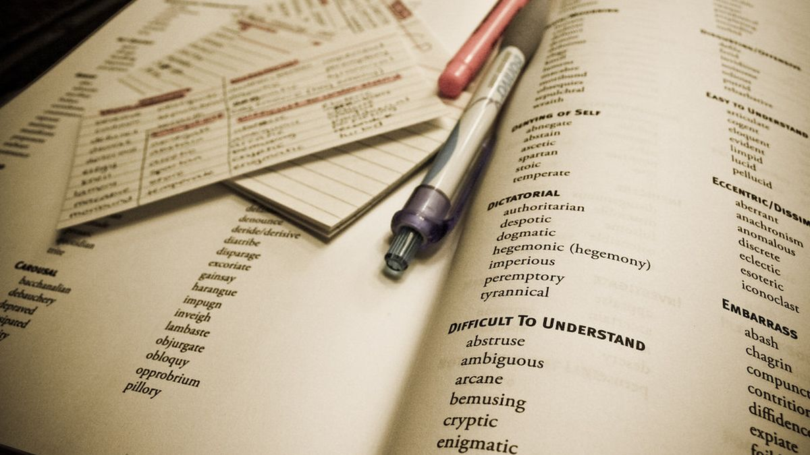
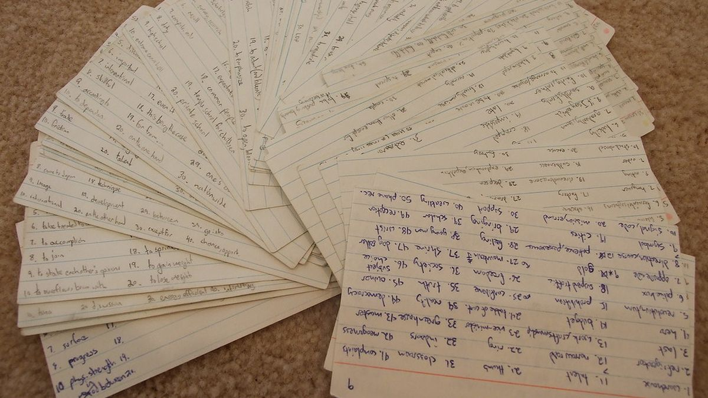
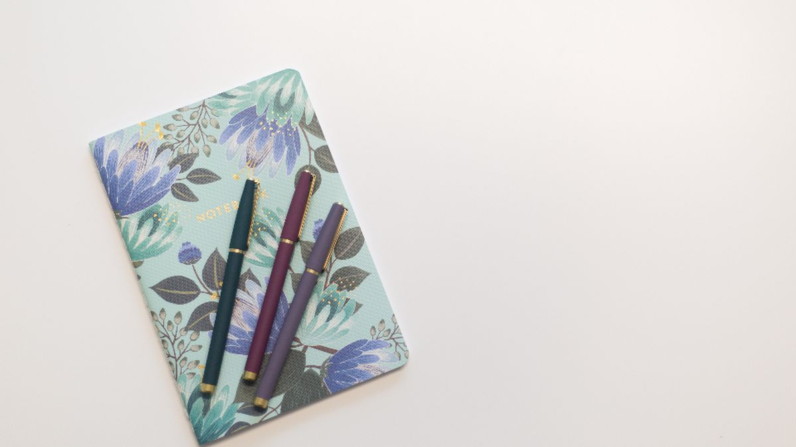

Irish Gaelic Self-Study Progress Tracking
Build a consistent Irish study habit
Track what you're learning, spot the gaps, and stay motivated — whether you're prepping for the TEG or just reconnecting with the language.

Irish Gaelic Self-Study Progress Tracker — $15.99
A ready-to-use spreadsheet and guide for logging your study sessions and seeing real progress.
More Irish study tools
Irish Gaelic Study Dashboard (Premium)Excel & Google Sheets dashboard with charts and streaks$24.99

Irish Gaelic Complete Study Kit3 spreadsheets + monthly printable$24.99
Irish Vocabulary LogLog Irish words with gender, examples and review dates$6.99 TEG Exam Countdown PlannerWeek-by-week Irish exam prep, planned vs actual$7.99
Irish Monthly Study Habit TrackerOne-page monthly habit tracker for Irish learners$5.99Learning another language?
Latest Posts
- "Mo Bhád" or "Mo Bád"? How to Finally Learn Irish Mutations (Séimhiú and Urú)Keep mixing up séimhiú and urú? Learn Irish mutations one trigger at a time, say them aloud in phrases, and log each pattern until it sticks.October 30, 2026
- My 400-Day Duolingo Streak Froze at "Conas atá tú?": Is Duolingo Enough to Learn Irish?Is Duolingo enough to learn Irish? A long streak builds reading and recall, but speaking and listening need their own time. Here's how to spot the gap.October 29, 2026
- Why Can't You Understand Spoken Irish Yet?Why can't you understand spoken Irish even though you can read it? The real causes of the listening gap, and a step-by-step way to close it.October 23, 2026

How Many Words Do You Need for a Basic Conversation in Irish?How many Irish words do you actually need for a basic conversation? Realistic vocabulary targets by goal, and how to track what sticks.October 16, 2026
Restarting Irish Study After a Break: How to Get Back on TrackStopped studying Irish for weeks or months? Here's how to restart without starting over, and how tracking helps you see what you actually kept.October 9, 2026- How Long Does It Take to Learn Irish?How long does it take to learn Irish? Realistic time estimates by goal, from basic conversation to fluency, and the factors that change them.September 7, 2026
- Irish Study Tools Essentials: Materials That Support Real ProgressIrish study tools that support real progress: dictionaries, grammar books, flashcards, and learning materials for self-taught learners.August 26, 2026
- The Complete Guide to Irish Gaelic Self-Study Progress TrackingThe complete guide to tracking self-study progress in Irish Gaelic: routines, skill balance, milestones, and staying consistent as a self-taught learner.August 24, 2026
- Why Tracking Your Irish Study MattersWhy tracking your Irish study matters for self-taught learners: spot gaps, stay motivated, and see progress you would otherwise miss.August 15, 2026
- Building a Daily Study Routine: Irish for Busy LearnersA realistic daily Irish study routine for busy learners: short consistent sessions that build progress without burning out by midweek.August 14, 2026
 Balancing Four Skills: Why Irish Learners Drift, and How to RecoverMost Irish learners drift toward listening and reading. How to rebalance speaking, listening, reading, and writing, and track it.August 13, 2026
Balancing Four Skills: Why Irish Learners Drift, and How to RecoverMost Irish learners drift toward listening and reading. How to rebalance speaking, listening, reading, and writing, and track it.August 13, 2026
How to Use the Irish Gaelic Self-Study Progress TrackerHow to use the Irish Gaelic Self-Study Progress Tracker to log study sessions, balance skills, and see real progress over time.August 12, 2026 Reconnecting with Irish as a Heritage Learner: More Than Language StudyLearning Irish as a heritage learner is about more than language study. How to reconnect with your family's language and track your journey.August 11, 2026
Reconnecting with Irish as a Heritage Learner: More Than Language StudyLearning Irish as a heritage learner is about more than language study. How to reconnect with your family's language and track your journey.August 11, 2026- TEG Exam Prep: Using Your Tracker to Manage Readiness and CountdownPreparing for the TEG Irish exam? Use a study tracker to measure readiness across skills and plan your countdown to exam day.August 10, 2026
 Irish Study FAQ: Questions Self-Taught Learners AskAnswers to common questions from self-taught Irish learners: how long it takes, what to study first, dialects, resources, and staying motivated.August 9, 2026
Irish Study FAQ: Questions Self-Taught Learners AskAnswers to common questions from self-taught Irish learners: how long it takes, what to study first, dialects, resources, and staying motivated.August 9, 2026